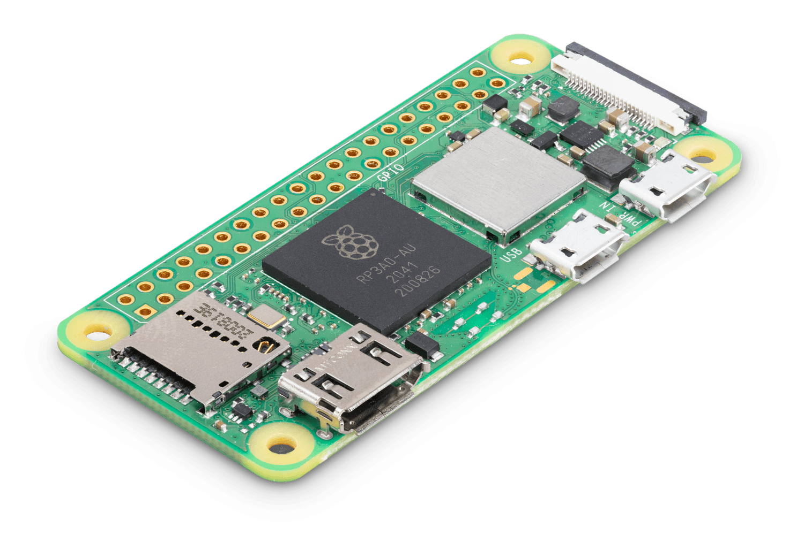
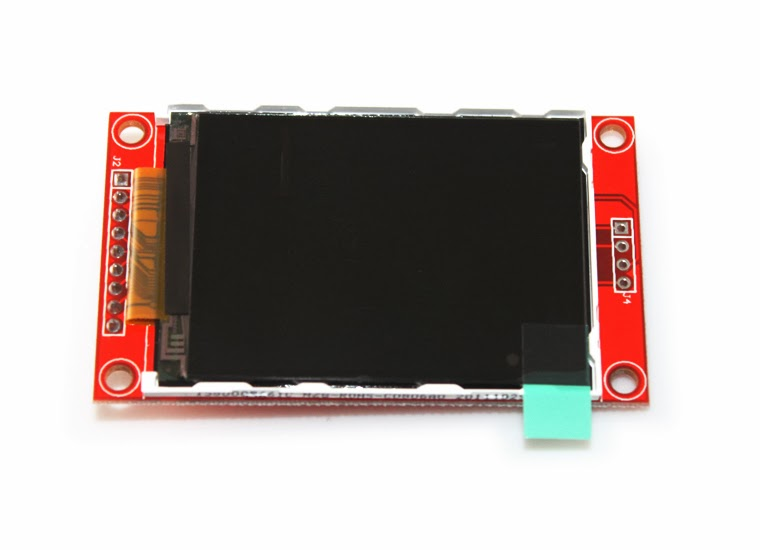
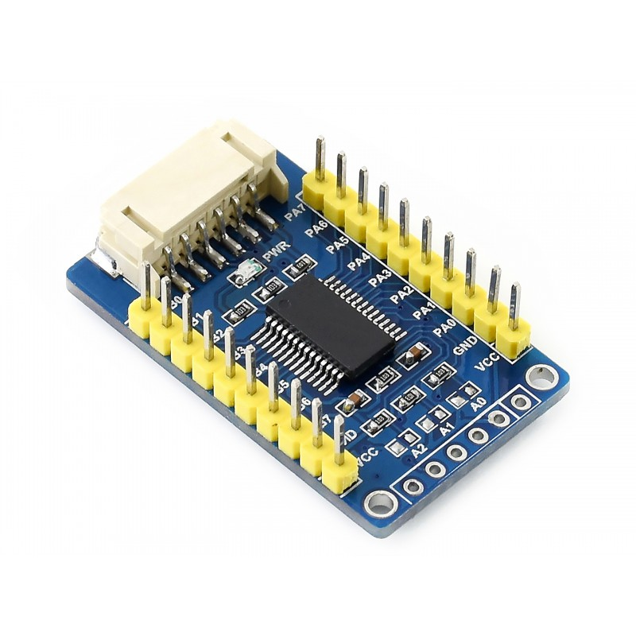

Smart Symbolic Graphing Calculator
Julian Alvarez
Background
The project utilizes the Giac library to perform mathematical computations and LVGL to draw the GUI to the display. Additionally, it utilizes Wi-Fi to enable faculty and test administrators to limit the capabilities of the calculator to prevent cheating in testing situations.
Technologies Used
LVGL
- Small memory footprint
- Multiplatform
- Display-agnostic
- Large library of widgets
- FOSS C library (MIT)
GIAC
- Written in C++14
- Uses GNU Build System
- CAS computing kernel
- HP Prime
- Casio CG10/CG20/CG50
- Fx-9750GIII/9860GIII
- TI Nspire

Hardware
Raspberry Pi Zero 2 W
320x240 Touchscreen with ILI9341 controller
Handmade 35 button matrix
MCP23017 Port Expander

%%{init: {"flowchart": {"htmlLabels": false}} }%%
flowchart TD
A(Raspberry Pi Zero 2 W)== SPI ==>B
B(Screen)== SPI ==>A
A== I2C ==>C(MCP23017)
C== I2C ==>A
C==>D(Keypad)
D==>C
%%{init: {"flowchart": {"htmlLabels": false}} }%%
flowchart TD
A("Server(Admin)") --> B(Calculator 1) & C(Calculator 2) & D(Calculator 2)
Server-Client Architecture
Admin restricts capabilities of Calculators
- CAS
- Graphing
- Functions
Admin Collects usage data in form of logs
- Blacklisted Function Call
- Whitelisted Function Call
- Graphing Expressions
- Button Presses
- Journalctl
Calculator Connection State Diagram
stateDiagram-v2 noWifi : Not connected to an AP yesWifi : Connected to an AP yesAdmin: Connected to an Administrator noWifi --> yesWifi : connect yesWifi --> noWifi : disconnect yesWifi --> yesAdmin : connect yesAdmin --> yesWifi : disconnect
sequenceDiagram participant C as Calculator participant A as Administrator C->>+A: connectionInfo A-->>-C: adminInfo
Simple Admin Info Search
sequenceDiagram participant C as Calculator participant A as Administrator C->>+A: connectionInfo A-->>-C: adminInfo
When searching for potential administrators to connect to, calculators send out a connectionInfo json payload to all that are available. An adminInfo json is expected in return.
{
ssgcType: "connectionInfo",
clientIP: "192.168.1.1",
clientName: "John Doe",
clientVersion: {
major: 1,
minor: 0,
bugfix: 6,
}
}
{
ssgcType: "adminInfo",
adminIP: "192.168.2.11",
adminName: "Xiaokun Yang",
adminExtra: "D2401 Exam Room"
}
sequenceDiagram participant C as Calculator participant A as Administrator C->>+A: connectionInfo A-->>-C: adminInfo C->>+A: connectionRequest A-->>-C: connectionPermissionReply C->>A: connectionPermissionAccept Note over A,C: Admin and Calculator are now connected loop Asynchronously A-->>C: adminData C->>A: clientData end
sequenceDiagram participant C as Calculator participant A as Administrator Note over A,C: Admin and Calculator are already connected loop Asynchronously A-->>C: adminData C->>A: clientData opt Disconnect alt Client engages C->>A: clientRevoke else Admin engages A-->>C: adminRevoke end A-->C: Websocket closed between Admin and Calculator end end
{
ssgcType: "connectionPermissionReply",
permissions: {
functionRestrictionsEnable: true,
graphingRestrictionsEnable: false,
historyTrackingEnable: false,
screenCaptureEnable: true,
remoteConnectionEnable: true,
settingOverideEnable: true,
payloadEnable: true
},
functionBlacklist: [
"solve",
"simplify",
"factor",
"integrate",
"differentiate"],
screenCaptureInfo: {
screenshotFrequency: 1000, // millis
recordingEnable: true, // realtime remote capture
},
settingOverrideInfo: [...]
}
{
ssgcType: "connectionPermissionAccept",
clientIP: "192.168.1.1",
clientName: "John Doe"
}
{
ssgcType: "connectionPermissionReject",
clientIP: "192.168.1.1",
clientName: "John Doe",
rejectionReason: "Permissions Rejected"
}
CODE?
How are these .out files generated?
How are these .out files generated?
CMake!!!
How does it calculate?
How does it calculate?
Plotting?
Plotting?
A bit too much code to properly explain within 20 minutes.
A bit too much code to properly explain within 20 minutes.
😥
- Point
- PlotDataBlock
- Plot
- Graph
Point
A cartesian coordinate where
x and y are of type double
PlotDataBlock
Holds a
vector of Points and their domain.
Plot
Given a
string representing a mathematical expression, returns two vectors of doubles
representing coordinates meant for usage by Graph.
Plot
Uses an algorithm that computes the second derivative numerically to estimate optimal x-coordinates for plotting and minimize aliasing.
Graph
Handles rendering ofPlots onto the screen. Interfaces with LVGL.
😕
😕
What kind of algorithm?